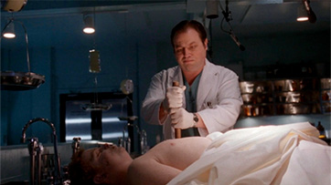
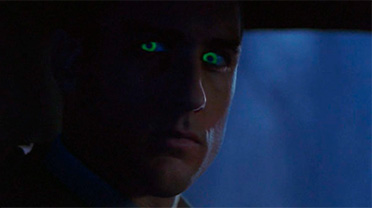
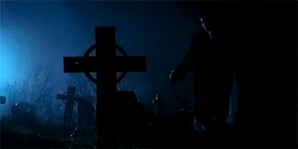

La historia comienza con Mulder persiguiendo a un joven llamado Ronnie Strickland y clavándole una estaca en el pecho, convencido de
que se trata de un vampiro. A partir de ese momento, los agentes deben explicar lo sucedido a su superior Walter Skinner, y lo hacen ofr
eciendo dos versiones distintas de los mismos hechos.
La perspectiva de Scully muestra a Mulder como impulsivo y obsesionado con lo paranormal, mientras que ella se siente menospreciada por
el alguacil Hartwell, quien aparece en su relato como un hombre atractivo y encantador. En contraste, la versión de Mulder presenta a Sc
ully como aburrida y poco cooperativa, y al alguacil como un personaje torpe y ridículo.
Este contraste narrativo es el núcleo del episodio, pues expone cómo la percepción subjetiva puede distorsionar la realidad y cómo los m
ismos acontecimientos pueden ser interpretados de manera radicalmente diferente.
“Bad Blood” es un capítulo que se distingue por su estructura narrativa dual y por la manera en que explora la subjetividad de la verdad.
Más allá del caso sobrenatural, lo que realmente resalta es la dinámica entre Mulder y Scully, la forma en que cada uno percibe al otro
y cómo es que las percepciones reflejan tanto sus diferencias como la complicidad que los une. Es un episodio que demuestra la capacidad
de la serie para experimentar con distintos tonos y estilos, ofreciendo una historia que combina misterio, sátira y reflexión sobre la
naturaleza de la verdad, y que se ha convertido en una pieza clave para entender la riqueza creativa de The X-Files.


